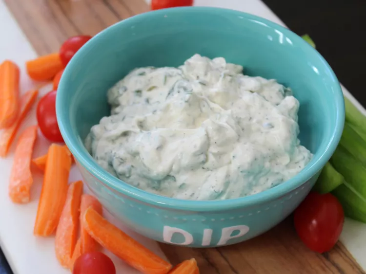

Травяной соус

Описание
Этот простой травяной дип готовится из сметаны и майонеза, смешанных с петрушкой, базиликом, зеленым луком и укропом. Лучше всего охладить в холодильнике в течение нескольких часов или ночи. Подавайте дип с овощами или крекерами.
Ингредиенты
- 1/2 стакана сметаны
- 1/2 стакана майонеза
- 2 столовые ложки измельченной свежей петрушки
- 2 столовые ложки измельченного свежего базилика
- 2 столовые ложки измельченного свежего зеленого лука
- 2 столовые ложки измельченного свежего укропа
- 1/2 чайной ложки свежемолотого черного перца
- 1/2 чайной ложки соли
Шаги.
- Смешайте в миске сметану, майонез, петрушку, базилик, зеленый лук, укроп, соль и перец.
- Охладите в холодильнике в течение ночи или 8 часов.
Home